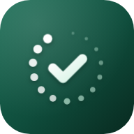

添加到主屏幕再使用数据保存更稳定，还能在锁屏通知里看到待办。
三个手势就够了点圆圈完成，点文字编辑；右滑完成，左滑删除，删错了能撤销。
清单、锁屏卡片和预览一起变化。字体用的是手机自带的，没有的会自动换成最接近的。
开启后，锁屏上只显示“还有几件”，内容要解锁后才能看到和勾选。别人拿到你的手机时更安心。
重复的事项（每天、工作日、每周）完成后，到下一次该做的那天会自动回到待完成。
待办只保存在这台设备上，没有上传到任何服务器。换手机或清除网站数据前，请先导出备份。
iPhone 安装隐私政策意见反馈
正在检查离线可用状态
安卓 App：熄屏后再亮屏，先看到碎碎清单的锁屏，点圆圈完成，上滑进入手机；也可以只用锁屏通知卡片。iPhone：添加到主屏幕后可开启锁屏通知；原生版提供锁屏小组件。
没有账号，没有服务器，待办只保存在你的手机里。可以在“设置”里开启“锁屏隐藏待办内容”。换手机前请导出备份。隐私政策
遇到问题或有想法，欢迎在这里留言。
碎碎清单 1.3 · 湖畔照片来自 Unsplash，其余壁纸为碎碎清单原创
用 iPhone 自带的 Safari 打开本页（微信、小红书里请先点右上角，选择“在浏览器打开”）。
点底部或地址栏旁的分享按钮 。
向下找到添加到主屏幕；若看到“作为网页 App 打开”，保持开启。
以后从桌面的“碎碎清单”图标打开。第一次打开请保持联网，等“关于”里显示可离线使用。
从桌面图标打开的碎碎清单与 Safari 里的网页，数据彼此独立。请从图标开始正式记录。
亮屏时先看到碎碎清单的锁屏：壁纸、时钟和今天的待办，点圆圈直接完成，上滑进入手机。需要打开下面几项权限，完成后回到这里会自动打勾。
用来在锁屏常驻待办卡片，并让锁屏服务保持运行。
熄屏时把碎碎清单放到锁屏前面。
小米、红米、OPPO、vivo、荣耀等手机还需要在应用权限里手动打开这几项，否则锁屏可能不出现或被系统关掉。